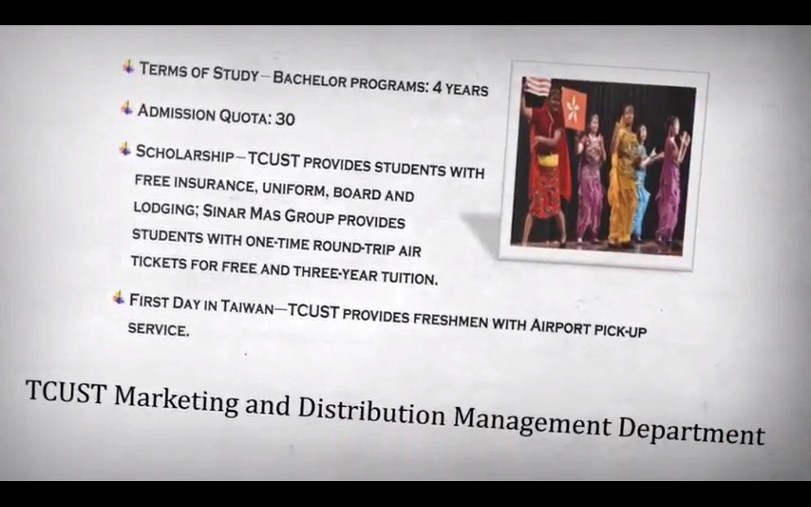
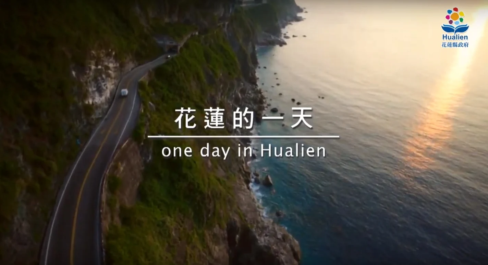
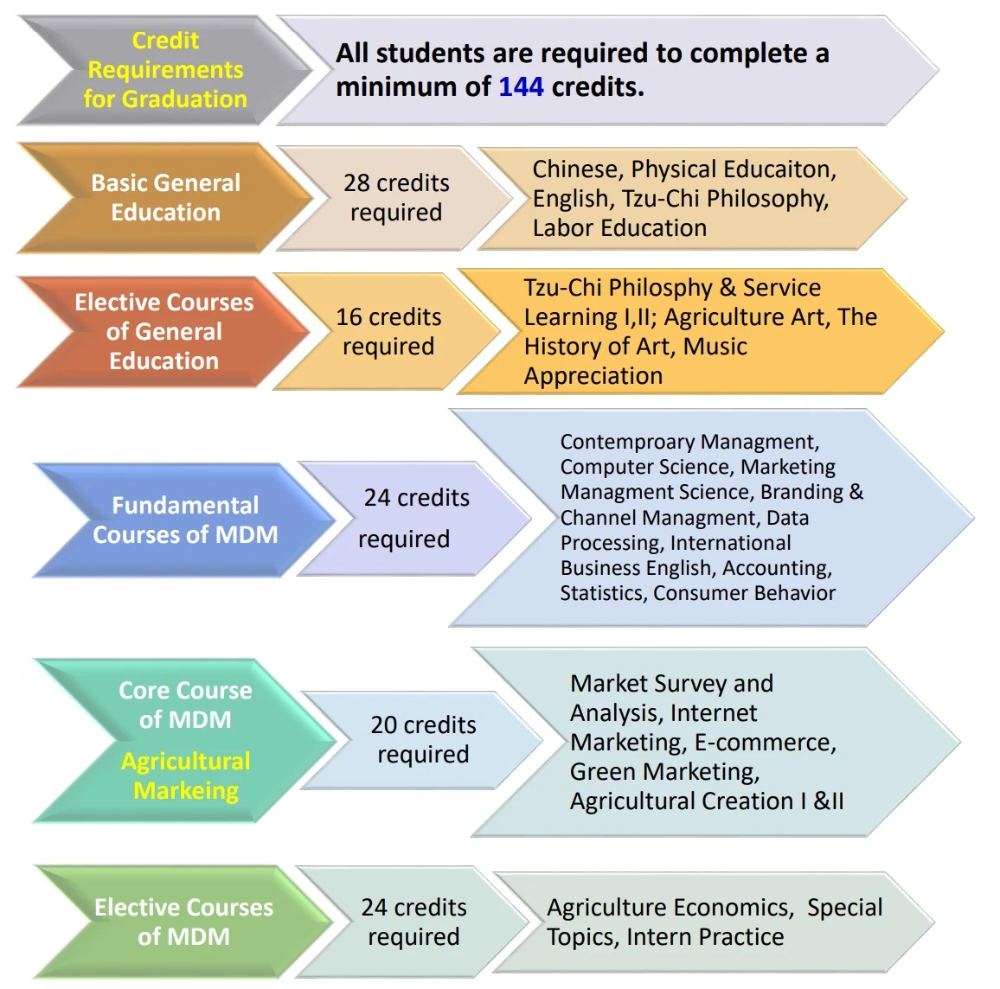
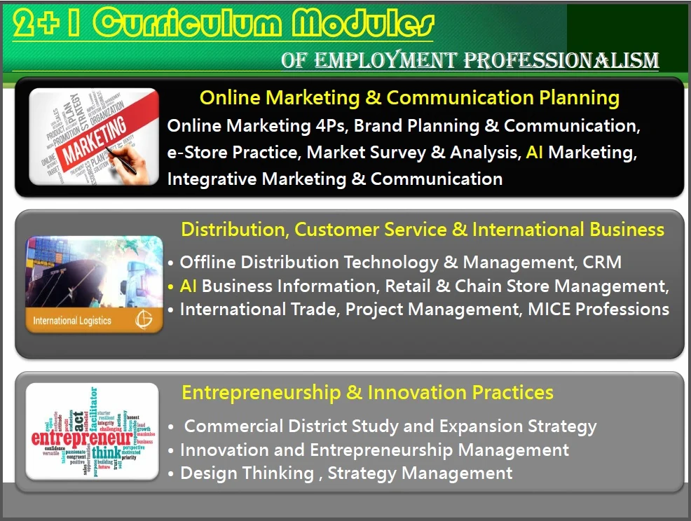

Introduction for International students
Original department materials, presented in their publication language.
International Students
Tzu Chi University of Science and Technology x Sinar Mas Agribusiness and Food
↑ Click me !
Tzu Chi University of Science and Technology (TCUST)
Marketing and Distribution Management Department (MDM)
Our goal is to cultivate and nourish both humane and professional talents in Marketing and Distribution Management. This program is designed to integrate humane essences with the emphasis on sincerity, integrity, faith and honesty.
We offer a four-year program leading to the degree of Bachelor of Business Administration. A student must complete a minimum of 128 credit units, of which 70 are obligatory. In addition to coursework in various areas of marketing, the students will be acquainted with basic business concepts and practices. The first-year courses include general coursework in social and human sciences. Guidance courses, such as Marketing Management, Distribution Management, Fundamentals of Accounting, and Business Law, are introduced during the second year of study. In the third and fourth years of study, we offer specialized courses, including Consumer Behavior, Market Survey, Customer Relationship Management, Retail-Service Management, Supply Chain Management, and Case Study.
Division of Agricultural Business for 2019 Fall Semester (Indonesian Students)
General International Students
The goal of this program is to be focused on cultivating students′ special expertise in online marketing and offline distribution management for agricultural industry. The first-year courses majorly include Chinese and general coursework in social and human sciences. Guidance courses in the fundamentals of marketing & distribution management and agriculture arts are introduced from the second year of study; specialized courses like Branding Marketing & Channel Strategies, Project Management, International Business and Customer Relationship Management are offered in the third. Intern Practice is arranged for the entire fourth year by Sinar Mas Group where students are properly allocated.
Introduction
Features
² In MDM department, 100% of the faculty members have PhD degrees and are assistant professors or above. Faculty members have high enthusiasms and passion for teachings and interacting with students.
² Industrial and academic lecturers invited to our department are all of elite professionals.
² Possessing excellent learning equipment and environment.
² MDM Students are encouraged to engage in learning marketing and distribution expertise, participating in extra-curricular activities, competitions, and internships, and acquiring professional certificates.
Goal of Individuality Cultivation
² Quality of Humanism
² Creative & Critical Thinking
² Sense of Responsibility & Teamwork Spirit
² Capability of Intercultural Communication
² Employment and Workplace Ethics
Goal of Expertise Cultivation
2+1 Curriculum Modules of Employment Professionalism
網路行銷與傳播企劃 Online Marketing & Communication Planning
流通客服與國際商務 Distribution, Customer Service & International Business
創業規劃與整合實務 Entrepreneurship & Innovation Practices
Curriculum Modules
Curriculum
Modules
Module A
Online Marketing and Communication Planning
Module B
Distribution, Customer Service and International Business
Module C
Entrepreneurship & Innovation
Year
Category
Course Title in Chinese
Course Title in English
Credits
Hours
4
Elective Course
(25 credits)
自媒體傳播
We-Media Communication
2
AI智慧門市管理/
AI智慧商流
Artificial Intelligence for Store Management/Artificial Intelligence for Product Flow
3
創新與創業管理
Innovation and Entrepreneurship Management
AI智慧行銷
Artificial Intelligence for Marketing
商展企畫與實務/
國際會展實務
Exhibition Planning and Practices/
International Exhibition Practices
設計思考
Design Thinking
大數據分析
Big Data Analysis
國際金融與匯兌
International Finance and Remittances
機構實習
Intern Practice
整合行銷傳播
Integrated Marketing Communication
採購實務
Procurement Practice
策略管理
Strategy Management
(19 credits)
網路行銷/
虛擬商店實務
Internet Marketing /
Virtual Store Practices
商圈研究與展店策略/
連鎖加盟管理
Commercial District Study and Expansion Strategy/
Franchise Management
跨領域專題II(學院)
畢業門檻
Interdisciplinary Seminar II
品牌企劃實務
Brand Planning
專案管理
Project Management
跨領域專題I(學院)
Interdisciplinary Seminar I
行銷網頁視覺設計II
Visual Design of Online Marketing II
流通資訊科技
Logistic Informatics
商圈研究與展店
策略
Commercial District Study and Expansion Strategy
商業情報分析
Business Intelligence Analysis
國際貿易實務
International Trade Practices
存貨管理與成本分析
Inventory Management & Cost Analysis
Core Courses (Required)
(6 credits)
消費者行為
Consumer Behavior
行銷研究
Marketing Research
創新策略管理/
人力資源管理
Strategic Management of Innovation/Human Resource Management
(11 credits)
綠色企業行銷
Marketing of Green Business
國際商務英文
International Business English
Required Course of Mgt. School (學院)
職場跨領域應用(2) Occupational Interdisciplinary Application
市場調查與分析
Market Survey & Analysis
社區服務
Community Service
Elective Course of Mgt. School (學院)
專案企劃(2) Project Planning
企業倫理與社會責任
Business Ethics and Social Responsibility
預算管理與內部控制
Budget Management & Internal Control
Required Course of Mgt. School商業簡報設計與表達(2) Design and Expression of Business Presentation (學院)
行銷網頁視覺設計I
Visual Design of Online Marketing I
流通管理
Distribution Management
[全人]金融理財資訊網 (上2)(下2) (學院)
Financial Information Network
2/2
電子商務程式設計
E-commerce Programming
顧客關係管理
Customer Relation Management
Business Fundamentals
(Required)
(2 credits)
統計學
Statistics
1
(3 credits)
行銷管理
Marketing Management
(16credits)
計算機概論
Introduction to Computer Science
經濟學
Economics
資料處理
Data Processing
管理數學
Management Mathematics
會計學
Accounting
管理學
Contemporary Management
Bachelor's Degree Program in Marketing and Distribution Management (MDM), 128-144credits, Fall 2019
瀏覽數:
友善列印
分享
| For freshman (YouTube 5:05) | One day in Hualien (YouTube 6:43, by Hualien County Government) |
| Curriculum Modules | Module A Online Marketing and Communication Planning | Module B Distribution, Customer Service and International Business | Module C Entrepreneurship & Innovation | |||||||||||
|---|---|---|---|---|---|---|---|---|---|---|---|---|---|---|
| Year | Category | Course Title in Chinese | Course Title in English | Credits | Hours | Course Title in Chinese | Course Title in English | Credits | Hours | Course Title in Chinese | Course Title in English | Credits | Hours | |
| 4 | Elective Course (25 credits) | 自媒體傳播 | We-Media Communication | 2 | 2 | AI智慧門市管理/ AI智慧商流 | Artificial Intelligence for Store Management/Artificial Intelligence for Product Flow | 3 | 3 | 創新與創業管理 | Innovation and Entrepreneurship Management | 3 | 3 | |
| AI智慧行銷 | Artificial Intelligence for Marketing | 2 | 2 | 商展企畫與實務/ 國際會展實務 | Exhibition Planning and Practices/ International Exhibition Practices | 3 | 3 | 設計思考 | Design Thinking | 2 | 2 | |||
| 大數據分析 | Big Data Analysis | 3 | 3 | 國際金融與匯兌 | International Finance and Remittances | 2 | 2 | 機構實習 | Intern Practice | 2 | 2 | |||
| 整合行銷傳播 | Integrated Marketing Communication | 3 | 3 | 採購實務 | Procurement Practice | 2 | 2 | 策略管理 | Strategy Management | 2 | 2 | |||
| 3 | Elective Course (19 credits) | 網路行銷/ 虛擬商店實務 | Internet Marketing / Virtual Store Practices | 3 | 3 | 商圈研究與展店策略/ 連鎖加盟管理 | Commercial District Study and Expansion Strategy/ Franchise Management | 3 | 3 | 跨領域專題II(學院) 畢業門檻 | Interdisciplinary Seminar II | 2 | 2 | |
| 品牌企劃實務 | Brand Planning | 3 | 3 | 專案管理 | Project Management | 3 | 3 | 跨領域專題I(學院) 畢業門檻 | Interdisciplinary Seminar I | 2 | 2 | |||
| 行銷網頁視覺設計II | Visual Design of Online Marketing II | 2 | 2 | 流通資訊科技 | Logistic Informatics | 3 | 3 | 商圈研究與展店 策略 | Commercial District Study and Expansion Strategy | 3 | 3 | |||
| 商業情報分析 | Business Intelligence Analysis | 3 | 3 | 國際貿易實務 | International Trade Practices | 3 | 3 | 存貨管理與成本分析 | Inventory Management & Cost Analysis | 3 | 3 | |||
| Core Courses (Required) (6 credits) | 消費者行為 | Consumer Behavior | 3 | 3 | 行銷研究 | Marketing Research | 3 | 3 | 創新策略管理/ 人力資源管理 | Strategic Management of Innovation/Human Resource Management | 2 | 2 | ||
| 2 | Elective Course (11 credits) | 綠色企業行銷 | Marketing of Green Business | 2 | 2 | 國際商務英文 | International Business English | 2 | 2 | Required Course of Mgt. School (學院) 職場跨領域應用(2) Occupational Interdisciplinary Application | 2 | 2 | ||
| 市場調查與分析 | Market Survey & Analysis | 2 | 2 | 社區服務 | Community Service | 2 | 2 | Elective Course of Mgt. School (學院) 專案企劃(2) Project Planning | 2 | 2 | ||||
| 企業倫理與社會責任 | Business Ethics and Social Responsibility | 2 | 2 | 預算管理與內部控制 | Budget Management & Internal Control | 3 | 3 | Required Course of Mgt. School商業簡報設計與表達(2) Design and Expression of Business Presentation (學院) | 2 | 2 | ||||
| Core Courses (Required) (11 credits) | 行銷網頁視覺設計I | Visual Design of Online Marketing I | 2 | 2 | 流通管理 | Distribution Management | 3 | 3 | [全人]金融理財資訊網 (上2)(下2) (學院) Financial Information Network | 2/2 | 2/2 | |||
| 電子商務程式設計 | E-commerce Programming | 3 | 3 | 顧客關係管理 | Customer Relation Management | 3 | 3 | |||||||
| Business Fundamentals (Required) (2 credits) | 統計學 | Statistics | 2 | 2 | ||||||||||
| 1 | Core Courses (Required) (3 credits) | 行銷管理 | Marketing Management | 3 | 3 | |||||||||
| Business Fundamentals (Required) (16credits) | 計算機概論 | Introduction to Computer Science | 3 | 3 | 經濟學 | Economics | 3 | 3 | ||||||
| 資料處理 | Data Processing | 2 | 2 | |||||||||||
| 管理數學 | Management Mathematics | 2 | 2 | 會計學 | Accounting | 3 | 3 | 管理學 | Contemporary Management | 3 | 3 | |||





